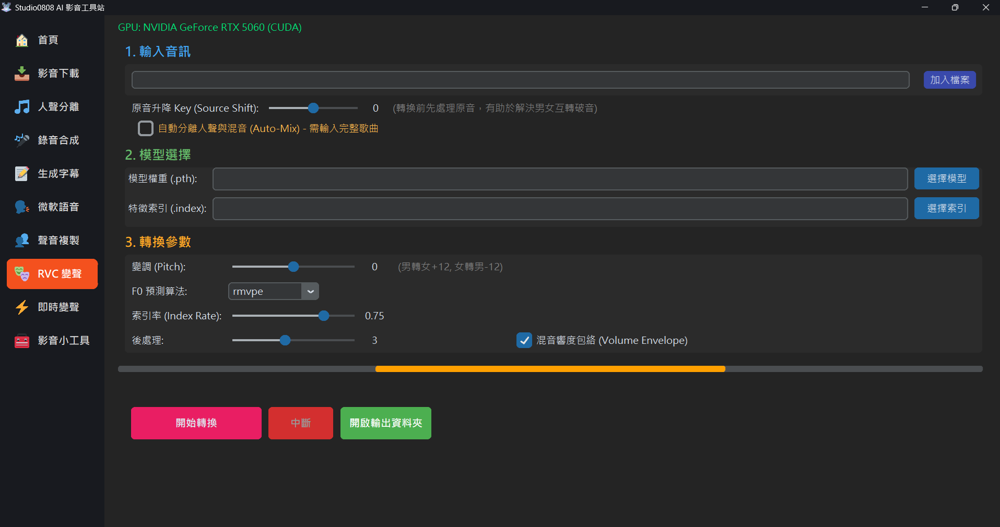

RVC (Retrieval-based Voice Conversion) 是一種強大的 AI 語音轉換技術。與「聲音複製(輸入文字產出語音)」不同，RVC 的運作方式是「輸入一段原始聲音」，然後 AI 會保留原本講話或唱歌的語調、情緒、節奏，但把音色替換成您指定的模型對象。
這項技術最常被用來製作「AI 翻唱 (AI Cover)」，例如讓知名歌手唱別人的歌，或是隱藏自己真實聲音進行直播與影片配音。
這是您要轉換的原始聲音來源：
在這裡載入您想要「變成」的那個人的聲音：
RVC 最強大的地方在於它的參數極具彈性，調整得當可以拯救破音、漏音，或是讓不同性別的翻唱變得無違和感。
| 變調 (Pitch) |
功能：改變輸入聲音的基頻 (音高) 前提，單位為「半音」。 用法：如果原本是男聲，要用女聲模型轉換，建議將 Pitch 設為 +12 (升一個八度)。反之，女聲轉男聲請設為
-12。同性別互轉保持 0 即可。如果是要改變歌曲本身的 Key 來符合模型音域，也可以微調 `+1` 或 `-2` 等。
|
|---|---|
| F0 預測算法 |
功能：AI 抓取您原始咬字音高曲線的方法。 選項：
|
| 索引率 (Index Rate) |
功能：控制聲音特徵「向模型靠攏」的程度 (範圍 0~1)。要有 .index 檔案才會生效。用法：數值越高：咬字與口吻會更像模型本人，但如果原本音訊音質很差，過高的索引率會導致各種怪異的「沙沙聲 (Artifacts)」。數值越低：會有更多您自己原本聲音的影子。 推薦：預設 0.75，若出現怪聲，請調降至 0.3 ~ 0.5。
|
| 過濾半徑 (Filter Radius) |
功能：當音高(F0)軌跡出現劇烈波動 (例如啞音、破音造成的預測失誤) 時，使用此數值進行中值濾波來平滑它。大於 3 才生效。 用法：如果您發現變出來的聲音在某些段落會突然極度不自然的「走音或爆音」，可以把此項調高，以削弱這種突兀變化。 推薦：預設 3，遇到啞音破音可往上調。
|
| 混音響度包絡 (RMS Mix Rate) |
功能：決定「輸出聲音的音量大小變化」要多大程度參考「輸入原始聲音的音量」。 用法：預設 0.25 代表輸出聲音的音量起伏，只有四分之一會照著您的輸入走，四分之三交由模型決定。如果您勾選此項 (或將值調高靠向
1)，AI 在大吼或低語的地方，音量變化會更還原您原本錄音時的大小。推薦：想要情緒起伏明顯(大聲小聲差異大)就勾選；想要每句話音量都很平均，請取消勾選 (設為 0)。 |
解法：
請確保您的 .pth 或 .index
檔案名稱、以及它們所在的「資料夾名稱」中，絕對不能包含任何空格、中文字、日文或特殊符號！
RVC 底層的 Python 對於路徑解析非常嚴格，請將資料夾與模型名稱全部改為純英文＋數字。
解法：
這代表底層的 Demucs 人聲分離模組失敗了。
原因可能是您的顯示卡記憶體 (VRAM) 不足，無法同時負荷這兩個耗資源的 AI 程序。建議您先到「人聲分離」選單，手動切分出純人聲檔案，再拿這個檔案到這裡變聲，最後自己用剪輯軟體疊合伴奏。
解法：
這是因為 RVC 的算法抓錯了音域。最有效的解法是：更換 F0 預測算法！
原本如果用 rmvpe，請換成 fcpe 或 crepe 再跑一次，通常都能得到大幅改善。另外，請檢察您的
Pitch (變調) 是否設反了。